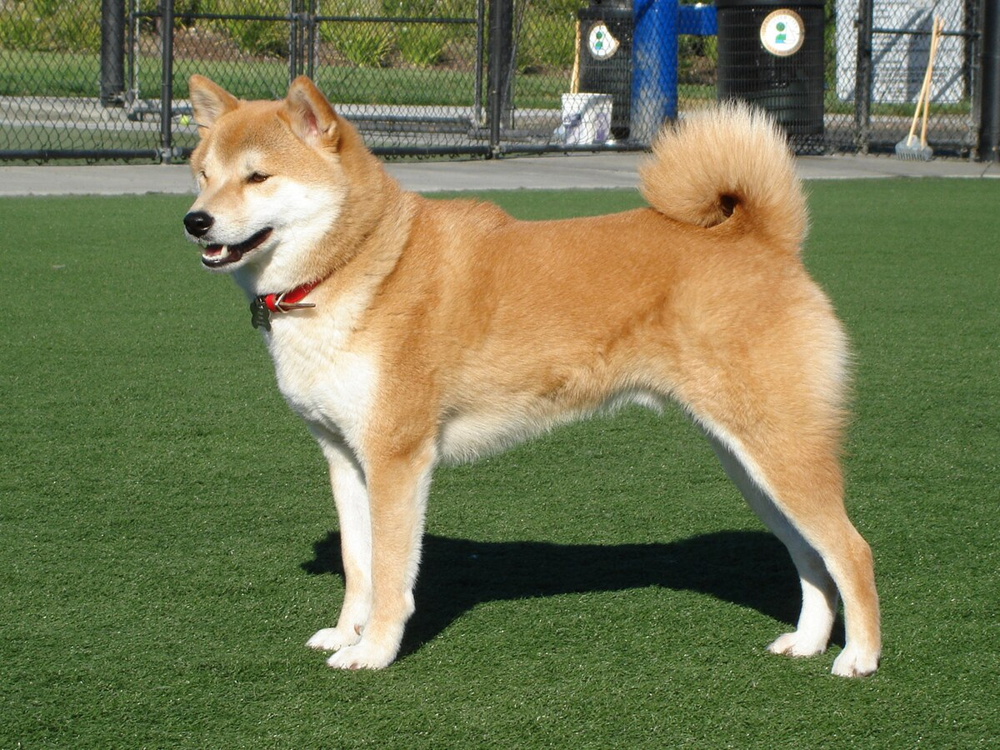

Popular Dog Breeds
Published: Oct 26 2023
Author: Zachary Reynolds

The Golden Retriever

Golden Retriever's are known for when not at work haveing an endearing love of life along with being serious workers at hunting and field work, as guides for the blind, and in search-and-rescue, enjoy obedience and other competitive events.
The Border Collies

Known as workaholics, border collies learn not only cues and commands quickly, but entire routines. If you're thinking of getting one of these remarkable doggos, be prepared to provide daily physical and mental workouts.
The Great Dane

Great Danes love to be where family is, and will bond with anyone and everyone. They'll even be friendly with strangers! Despite their large stature, Great Danes also get along well with children.
The Greyhound
greyhounds were bred to hunt by outrunning their prey. The fastest breed of dog, a greyhound can reach a speed of over 40 miles per hour, along with being incredibly lazy around the house.
The Shiba Inu
The Shiba Inu temperament is alert, loyal and lively and they tend to form strong bonds with their owners. However, they can also be quite independent and territorial with a strong hunting instinct.
The Siberian Huskies

Siberian huskies are probably best-known for their incredible sled-pulling skills, but these doggies aren't all business! Indeed, they make excellent working dogs, But they're sweet, friendly, and loyal cuddle bugs, too.
The German Shepherd
They are often used as guide, therapy, search-and-rescue, police, military, and narcotics and explosives detecting dogs. While they can come across as aloof to strangers, they are known to be wonderful family dogs.
| Breed | Weight | Popularity Rank |
|---|---|---|
| Golden Retriever | 50lbs-75lbs | #3 |
| German Shepherd | 49lbs-88lbs | #4 |
| Great Dane | 99lbs-200lbs | #17 |
| Siberian Huskies | 35lbs-60lbs | #21 |
| Border Collies | 27lbs-45lbs | #35 |
| Shiba Inu | 15lbs-24lbs | #43 |
| Greyhound | 57lbs-88lbs | #73 |
Popular Cat Breeds
Published: Oct 26 2023
Author: Zachary Reynolds

Ragdoll

The ragdoll's personality is smart, gentle, and super affectionate. These kind kitties love and crave human attention, but they're rarely demanding.
Siamese

Is an energetic and opinionated breed that loves human companionship. Their bright blue eyes radiate intelligence and they love learning new things and exploring their environment.
Sphynx
Notable for its hairless coat, the sphynx is also a friendly, loving, and energetic show-off who craves human attention. In contrast to her regal looks and serious expression, the sphynx is an acrobatic clown who doesn't take herself too seriously.
Persian
Easily recognizable for their brilliant eyes, luxurious coats, amiable nature, and elegant, almost royal demeanor, Persian cats continue to be one of the most popular cat breeds today.
Maine Coon

Maine Coons are regarded as "gentle giants" and possess above-average intelligence, making them relatively easy to train. They are known for being loyal to their family and cautious
Bengal

With their strong, muscular bodies, Bengal cats are highly athletic and bursting with energy. They love to climb and are even known for enjoying the water. You'll want to make sure your Bengal has a tall cat tree
The Scottish fold
The Scottish fold is a rare breed of cat which came about due to a genetic mutation in the 1960s. They are known for their rounded faces and bodies and unique folds on their ears, which give them what is often referred to as an 'owl-like' appearance.